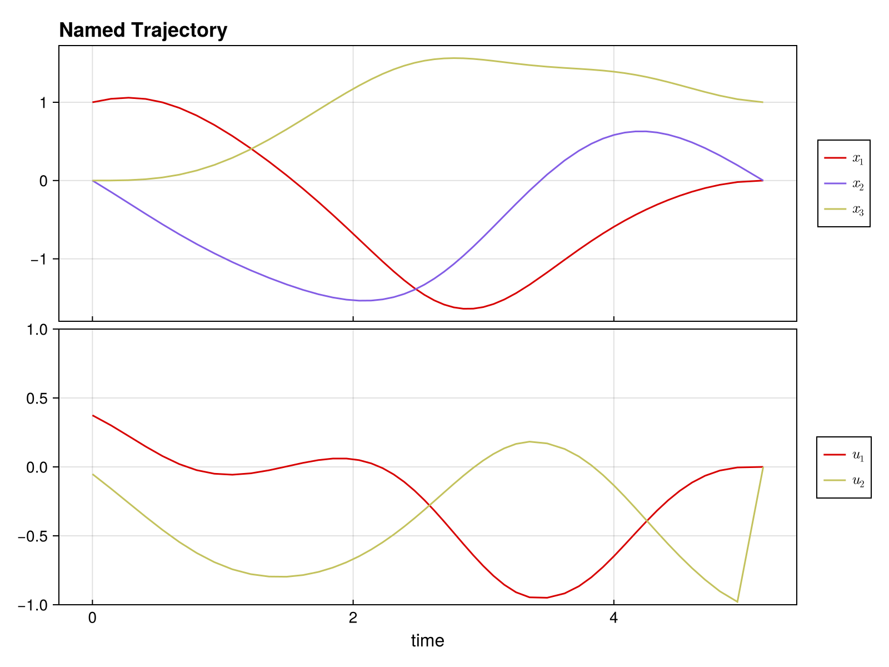

Complete Example: Time-Optimal Bilinear Control
This example demonstrates solving a time-optimal trajectory optimization problem with:
- Multiple control inputs with bounds
- Free time steps (variable Δt)
- Combined objective (control effort + minimum time)
using DirectTrajOpt
using NamedTrajectories
using LinearAlgebra
using CairoMakieProblem Setup
System: 3D oscillator with 2 control inputs
\[\dot{x} = (G_0 + u_1 G_1 + u_2 G_2) x\]
Goal: Drive from [1, 0, 0] to [0, 0, 1] minimizing ∫ ||u||² dt + w·T
Constraints:-1 ≤ u ≤ 1, 0.05 ≤ Δt ≤ 0.3
Define System Dynamics
G_drift = [
0.0 1.0 0.0;
-1.0 0.0 0.0;
0.0 0.0 -0.1
]
G_drives = [
[
1.0 0.0 0.0;
0.0 0.0 0.0;
0.0 0.0 0.0
],
[
0.0 0.0 0.0;
0.0 0.0 1.0;
0.0 1.0 0.0
],
]
G = u -> G_drift + sum(u .* G_drives)#2 (generic function with 1 method)Create Trajectory
N = 50
x_init = [1.0, 0.0, 0.0]
x_goal = [0.0, 0.0, 1.0]
x_guess = hcat([x_init + (x_goal - x_init) * (k/(N-1)) for k = 0:(N-1)]...)
traj = NamedTrajectory(
(x = x_guess, u = 0.1 * randn(2, N), Δt = fill(0.15, N));
timestep = :Δt,
controls = (:u, :Δt),
initial = (x = x_init,),
final = (x = x_goal,),
bounds = (u = 1.0, Δt = (0.05, 0.3)),
)N = 50, (x = 1:3, u = 4:5, → Δt = 6:6)Build and Solve Problem
integrator = BilinearIntegrator(G, :x, :u, traj)
obj = (QuadraticRegularizer(:u, traj, 1.0) + 0.5 * MinimumTimeObjective(traj, 1.0))
prob = DirectTrajOptProblem(traj, obj, integrator)
probDirectTrajOptProblem
Trajectory
Timesteps: 50
Duration: 7.35
Knot dim: 6
Variables: x (3), u (2), Δt (1)
Controls: u, Δt
Objective (2 terms)
1.0 * QuadraticRegularizer on :u (R = [1.0, 1.0], all)
0.5 * MinimumTimeObjective (D = 1.0)
Dynamics (1 integrators)
BilinearIntegrator: [:x] = exp(Δt G(:u)) [:x] (dim = 3)
Constraints (4 total: 2 equality, 2 bounds)
EqualityConstraint: "initial value of x"
EqualityConstraint: "final value of x"
BoundsConstraint: "bounds on u"
BoundsConstraint: "bounds on Δt"solve!(prob; max_iter = 50)SolveStats(MathOptInterface.ITERATION_LIMIT, "Maximum_Iterations_Exceeded", 3.824196986776332, 50, 14.885429859161377, :ipopt)Visualize Solution
plot(prob.trajectory) # See NamedTrajectories.jl documentation for plotting options
Analyze Solution
x_sol = prob.trajectory.x
u_sol = prob.trajectory.u
Δt_sol = prob.trajectory.Δt
println("Solution found!")
println(" Total time: $(sum(Δt_sol)) seconds")
println(" Δt range: [$(minimum(Δt_sol)), $(maximum(Δt_sol))]")
println(" Max |u₁|: $(maximum(abs.(u_sol[1,:])))")
println(" Max |u₂|: $(maximum(abs.(u_sol[2,:])))")
println(" Final error: $(norm(x_sol[:,end] - x_goal))")Solution found!
Total time: 5.320669606221068 seconds
Δt range: [0.0742769373693278, 0.19809854357117646]
Max |u₁|: 0.9492688655181312
Max |u₂|: 0.9787337076372469
Final error: 0.0Key Insights
Free time optimization: Variable Δt allows the optimizer to adjust trajectory speed, with shorter steps where control is needed and longer steps in smooth regions.
Control bounds: With time weight 0.5, controls don't fully saturate. Increase the weight to push toward bang-bang control.
Combined objectives: The + operator makes it easy to balance multiple goals.
Exercises
1. Bang-bang control: Set time weight to 5.0 - do controls saturate the bounds?
2. Fixed time: Remove Δt from controls and compare total time.
3. Add waypoint: Require passing through [0.5, 0, 0.5] at the midpoint:
constraint = NonlinearKnotPointConstraint(
x -> x - [0.5, 0, 0.5], :x, traj;
times=[div(N,2)], equality=true
)
prob = DirectTrajOptProblem(traj, obj, integrator; constraints=[constraint])4. Different goal: Try reaching [0, 1, 0] or [0.5, 0.5, 0.5]
5. Tighter bounds: Use bounds=(u = 0.5, Δt = (0.05, 0.3)) - how does time change?
This page was generated using Literate.jl.